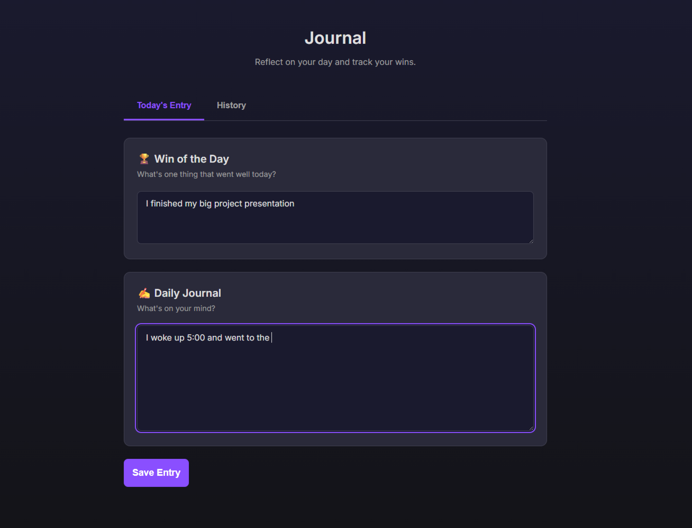
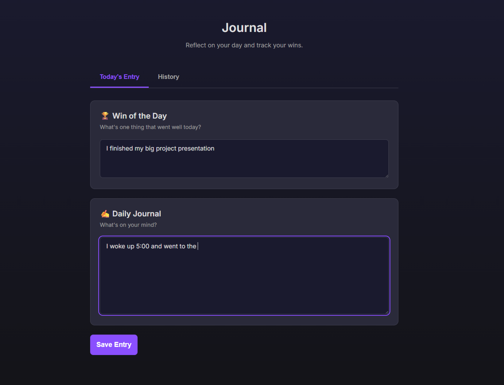

Solis
Full Stack Web App (Python/Flask) & Product Design

The Problem
Personal organization apps are often fragmented. A user might need one app for habit tracking, another for gym logs, and a third for shared family chores. This context switching creates friction. I wanted to build Solis: a unified "life OS" that brings personal growth and household management into a single, cohesive interface.
The Tech Stack & Design
- Backend: Python (Flask) using Blueprints for modular architecture and SQLAlchemy for complex database relationships (Users, Households, Habits).
- Frontend: HTML5, CSS3 (CSS Grid/Flexbox), and Vanilla JavaScript for asynchronous updates (Fetch API).
- Database: SQLite with relational modeling for shared household data.

Design Philosophy: I chose a deep "Dark Mode" aesthetic (#1a1a2e) paired with a vibrant purple accent (#8a4fff) to reduce eye strain during early morning or late night use. The interface relies on a card-based grid layout that adapts seamlessly from desktop to mobile.
Key Features
The application handles complex logic behind a simple UI:
- Household Sync: Users can invite family members to join their "Household," enabling a shared Shopping List and Chore Chart.
- Fitness Hub: Custom workout routines linked directly to habit completion logic.
- Smart Journaling: A "Win of the Day" prompt and daily reflection that saves to a history database.

 

Outcome
Solis is a fully functional web application. Building it enhanced my ability to think systematically—understanding how a button on the frontend interacts with the database model on the backend. It bridges the gap between visual design and software engineering.